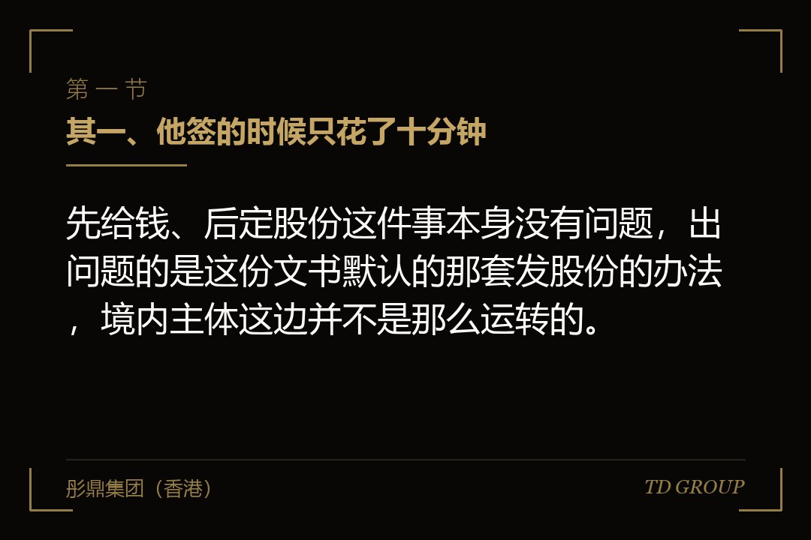
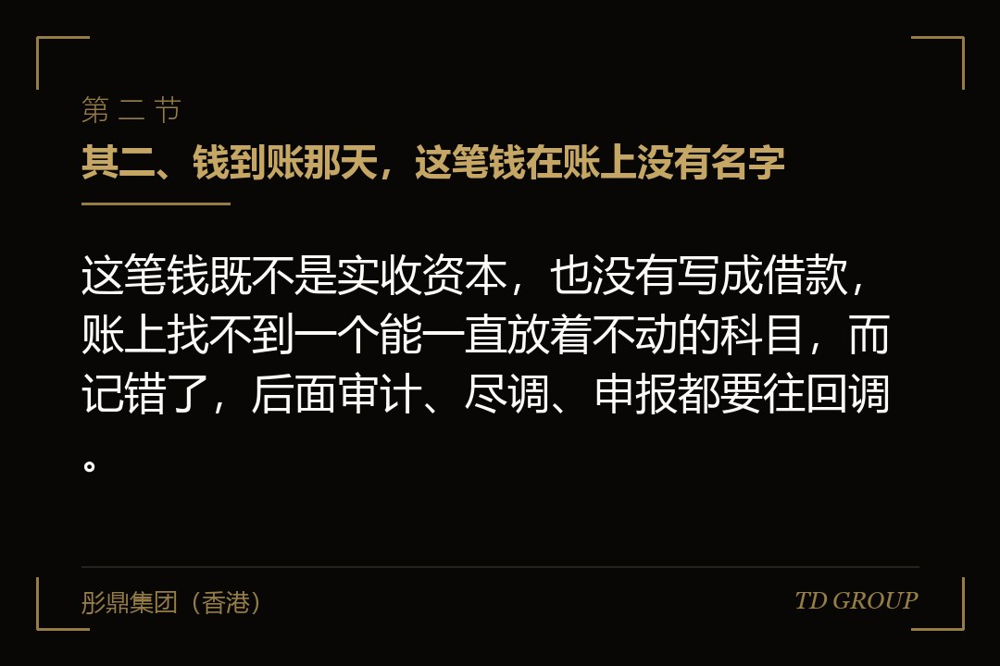
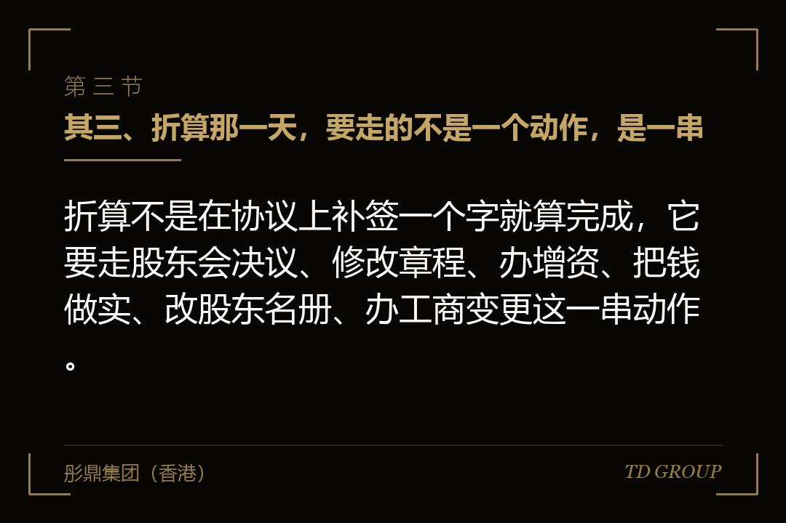

其一、他签的时候只花了十分钟

结论先行：先给钱、后定股份这件事本身没有问题，出问题的是这份文书默认的那套发股份的办法，境内主体这边并不是那么运转的。
有家做工业内窥镜的公司，在天使阶段拿到一位个人投资人的钱。这位投资人在海外投过几个项目，拿来的是一份两页纸的文书，中文一般译作简单未来股权协议，圈子里都叫它 SAFE。上面没有估值、没有利息、没有到期日，只写了一句：等公司完成下一轮定价融资时，这笔钱按当轮价格打一个折扣折算成股份。
老板读了两遍就签了。他后来说，这是他这些年看过最简单的一份融资文件，没有对赌、没有回购、没有一句读不懂的话。钱三天后到账，公司拿它把新一代镜体的样机做了出来，那笔钱花得一点没浪费。
两年后下一轮定价完成，该折算了。折算价当天下午就算出来了，双方对那个数字都没有异议。真正卡住的是接下来的事：这笔钱要变成股份，公司得开一次股东会、改一次公司章程、办一次工商变更；而这两年里公司又进过两位股东，他们签这份协议的时候还不在场。
这件事前后走了小半年。中间没有一个人不讲道理，也没有一条条款有争议，耗掉的全是"要拿到某某的一个签字"。老板事后的原话是，签的时候花了十分钟，办的时候花了小半年，这两件事居然是同一件事的两头。
先把范围说清楚。这里讲的是钱直接投进境内公司的情形；如果投的是境外主体，那是另一条路，手续和关口都是另外一套，不在本文范围里。老板拿到文书那天，头一件该确认的就是这笔钱要进哪一个主体，它决定了后面所有动作长什么样。
其二、钱到账那天，这笔钱在账上没有名字

结论先行：这笔钱既不是实收资本，也没有写成借款，账上找不到一个能一直放着不动的科目，而记错了，后面审计、尽调、申报都要往回调。
实收资本那一栏放不进去，因为注册资本还没有增加，工商那边也还没有办。记成借款又不对，双方从来就没打算让公司还这笔钱。记成预收也不行，公司既没有货要发，也没有服务要提供。剩下能用的位置只有往来款那一类过渡科目，而过渡科目这个名字本身就写着"暂时放一下"。
有家做微流控芯片的公司，前后收过四笔这样的钱，都挂在其他应付款下面，一挂就是两三年。平时没有人问，报表也照常出得来。中介进场做尽调那一天，头一个问题就是这四笔分别是什么、当初是怎么约定的、有没有书面文件，而当年经手的那位财务已经离职了。
这跟另一种情况不一样。有的公司是钱进来时就登记成了股东，私下另有一份按借款办的约定，那种至少在股权表上有个位置，争的是这笔钱到底算股还是算债。这里说的这一笔连位置都没有——它在股权表上不存在，在负债那一侧又名不正言不顺，谁来问都要重新解释一遍。
处理的办法不复杂，难的是当时就做。钱到账那天，双方把这笔钱的性质用一页纸写清楚：它将来要折成股份、现在不是要公司归还的借款、折算的触发条件是什么；再让会计按这个口径入账，并在报表附注里留一句说明。这一页纸的成本是当天一个小时，不写的成本是两年后的一次考古。
会计口径还有一个容易被忽略的角度：它不只影响报表好不好看，还影响这笔钱在税务上被怎么看待。所以签字之前最该问会计的一句不是"这样记行不行"，而是"这样记，两年后要折成股份时账怎么调回来"。具体处理以主管部门当时的口径为准。
其三、折算那一天，要走的不是一个动作，是一串

结论先行：折算不是在协议上补签一个字就算完成，它要走股东会决议、修改章程、办增资、把钱做实、改股东名册、办工商变更这一串动作。
这一串可以拆成三段。头一段是公司内部形成决定——开股东会、按章程规定的比例通过增资，并把章程里注册资本那一栏改过来。中间一段是钱要真的落到"出资"这个名义上，也就是把两年前那笔躺在公司账上的钱，重新认定成这次增资的出资。最后一段是对外——改股东名册，办工商变更登记，让公司外面的人也知道多了一位股东。
麻烦出在中间那一段。钱是两年前进来的，进来的时候不叫出资，现在要把它算成出资，就要有一条能说通的路径：当初的协议怎么写的、这笔钱这两年在账上放在哪一栏、双方有没有过书面确认、有没有被当成借款处理过。这条路径上少一环，办事的人就要多问一次，而多问一次通常就是多两周。
有家做康复机器人的公司在这一步上补了三份文件：一份是双方对当年这笔钱性质的追认，一份是这两年账务处理的说明，还有一份是全体股东确认这笔钱从一开始就是为了将来折成股份而进来的。三份文件本身都不难写，难的是要凑齐所有人签字，而其中一位股东当时人在国外。
所以折算这两个字，在两边的分量完全不一样。在境外，它大体是公司内部的一个动作，做完记一笔就生效。在境内，它是一次对外手续，公司自己说了不算，要经过一屋子人和一个窗口。多数老板签字那天想的是前一种，办的时候面对的是后一种。
其四、协议管得住签字的人，管不住两年后才进来的股东
结论先行：这份协议只在签字的那两方之间算数，它拘束不了后来进公司的股东，而折算这一步要过的恰恰是后来那些人的手。
增资要经股东会通过，这是章程里写死的事，跟两年前谁跟谁签过什么协议无关。而公司发新的股权时，在场的股东通常还握着一项写在章程或者投资协议里的权利——按自己的持股比例先出这笔钱。折算要发的那一块新股权，正好落在这项权利的射程里，所以要么请他们放弃，要么请他们出一份豁免。
有家做家用储能的公司就卡在这里。中间那一轮进来的机构股东其实很配合，也没打算真的自己出这笔钱，但他要求把豁免和另一件事绑在一起谈——既然要开股东会、要改章程，那顺便把他一直想加的一条也加进去。这就是筹码，而筹码是折算这一步天然递到对方手上的。
还有两件事会在同一次会议上被提出来。一件是先后进来的几位投资人之间谁排在前面，折算进来的这一位算哪一档。另一件是员工激励预留的那块股权由谁承担摊薄。这两件事本来跟两年前那份协议没关系，但它们都在"这次增资怎么做"这个议题下面，于是一起被摆上桌。
所以签这份协议那天真正该争的，不是折算价怎么算，是把将来那一步提前锁住：请当时的全体股东在这份协议上一起签个字，或者出一份股东会决议，写明日后按这份协议折算时各方同意配合、并放弃按持股比例先出这笔钱的权利。这一步在签字那天几乎不费力气，因为那时公司里就那么几个人。
华尔街彤鼎俱乐部的一次交流里，有位做过多轮融资的企业主把这句话讲得更直白：早期签的每一份文件，都要按"签字那天在场的人两年后一个都不在"去写。
其五、一直没有下一轮，这份协议就得自己说出一个结果
结论先行：境外文本里那条兜底安排是挂在一类特别股份上的，境内没有对应的载体，兜底就只能靠合同，而合同上最容易写成的形式是到期还钱。
境外那份文书通常没有到期日，也不写利息。它敢这么写，是因为它还有另一条腿：公司被卖掉或者清算的时候，这笔钱可以按当初投入的金额优先拿回去。承载这条权利的是一类专门设计的股份，出资方到那一刻手里是有身份的，不是只有一张纸。
境内主体这边没有这条腿。在真正折算成股权之前，出资方不是股东，他手里只有一份合同，而合同能给他的保障形式很有限。于是双方谈到最后，往往会加上一句：如果多少年内没有发生约定的那轮融资，这笔钱要还。这一句写下去，性质就变了——它从一笔等着变成股份的钱，变成了一笔有期限的债。
有家做细胞培养基的公司，三年没等到下一轮。协议里那句话写得含糊，只说"届时双方另行协商"，于是真到那天，谈的已经不是当初的条件，而是公司还剩多少现金、出资方愿不愿意再等。最后谈成的方案两边都不满意，可公司没有别的选择，因为那三年里它一直没把这笔钱的退路写清楚过。
这里还有一件事值得单独说一句：这笔钱如果被处理成一笔债，那么"由公司还"和"由创始人个人担保去还"是后果完全不同的两件事。签字那天多写一行和少写一行，差的不是措辞，是万一走到那一步，被追的是公司还是这个家。
所以真正该在签字前定下来的是三个时点上的结果：下一轮来了怎么折、下一轮迟到了怎么办、下一轮一直不来这笔钱算什么。三个都答得上来，这份协议才算完整；答不上来的那一个，将来就是要重新谈的那一个。具体安排以双方约定和当时有效的法律为准。
其六、签之前该问的四句话，签之后该留的四样凭证
结论先行：签之前把四件事问清楚，签之后把四样凭证留住，折算那天就不必从头去考古，更不必回头一个个去求人。
头一句要问的不是律师，是会计：这笔钱到我账上记在哪一栏、报表附注怎么写、将来折成股份的时候要怎么调回来。第二句是问对方：折算那天要办的那一串手续由谁去跑、材料由谁准备、费用由谁承担——这件事在协议里通常一个字都没有，可真到那天它是要花人也要花钱的。
第三句是问自己：折算需要哪些人签字，这些人现在同不同意，能不能今天就让他们把字签了。第四句还是问自己：如果一直没有下一轮，这笔钱要不要还、由谁还。四句话都不需要专业知识，只需要在签字之前真的问出口。
四样凭证同样简单。其一是钱的来路，也就是银行进账单，付款方名字要跟协议上的签字方对得上，中间经过别人的账户转一道，将来就要多解释一轮。其二是双方给这笔钱定性的那一页纸。其三是当时全体股东的知情与同意文件。其四是这两年里每一次口头调整都补一份书面确认。
有家做空气源热泵的公司把这四样从头留着。折算那天，股东会决议、章程修正案、出资的认定与工商材料，两周之内就办完了。不是因为他们效率高，是因为该问的人两年前就问过了，该签的字两年前就签过了，那两周里没有一件事需要重新说服谁。
这张清单的用处不在于填满它，在于它让人当天就知道自己缺什么。答得上来的公司，折算是一次手续；答不上来的公司，折算是一次谈判。同一件事，在没人催的时候做是整理，在有人等着的时候做就成了议价。
其七、境内主体其实有两条更容易办下来的走法
结论先行：如果确实要先给钱、后定股份，境内主体有两条更容易办下来的走法，代价是要在钱到账之前先把一部分事情说死。
走法一是直接做一次增资，价格先定一个数，同时约定日后按下一轮的价格回调——多退少补，调整的不是钱，是股权的多少。这样做的好处是，钱到账那天账上就有科目、股东名册上就有位置、工商也办了，将来只需要按约定调整一次持股比例，不用再走一遍从无到有的全套手续。
走法二是把它明确处理成一笔可以转成股权的借款：写清期限、写清折算的触发条件与算法、写清到期没有触发时怎么办，同时在钱到账之前就把当时全体股东对将来那次增资的同意拿到手。这样做的好处是账上有名字、税务与审计口径清楚，代价是它在折算之前确实是一笔债，要按债去管。
哪一条更合适，取决于四件事：公司现在有几位股东、章程对增资是怎么规定的、这笔钱预计要放多久、下一轮的确定性有多高。股东少、章程宽松、下一轮基本确定的，走法一更省事；股东结构已经复杂、下一轮没把握的，走法二反而更稳妥。这两条都不是标准答案，具体以公司章程约定和当时有效的法律为准。
华尔街彤鼎俱乐部的一场私董会上，有位企业主提过一个判断：一份融资文件好不好，不看它有多短，看它把将来要办的那些事写进去了没有。
回到开头那家做工业内窥镜的公司。那份两页纸的文书没有一条是错的，它错在把"发股份"当成了一件随时可以做的事——而在境内，发股份要经过一屋子人和一个窗口。所以这件事的成本不取决于条款写得复不复杂，只取决于签字那天有没有把折算那天要用到的人和纸提前备齐。关键在于，那半个小时是在公司还只有几个人的时候花的。